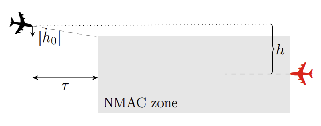

Vertical Collision Avoidance System (VerticalCAS)
The VerticalCAS benchmark considers a collision avoidance system (CAS), required for commercial aircraft, which gives vertical climbrate advisories to pilots [JK19, ABKL20].
using ClosedLoopReachability, LinearAlgebra
import Plots, DisplayAs
using ReachabilityBase.CurrentPath: @current_path
using ReachabilityBase.Timing: print_timed
using ClosedLoopReachability: FeedforwardNetwork
using Plots: plot, plot!Model
This model is a closed-loop variant of the aircraft collision avoidance system ACAS X. The considered scenario involves two aircraft, the ownship and the intruder, where the ownship is equipped with a collision avoidance system referred to as VerticalCAS. VerticalCAS issues vertical climbrate advisories to the ownship pilot every second to avoid a near mid-air collision (NMAC), which is the region where the aircraft are separated by less than 100 ft vertically and 500 ft horizontally. The ownship is assumed to have a constant horizontal speed, and the intruder is assumed to follow a constant horizontal trajectory toward the ownship. The figure below illustrates the scenario, where the ownship is shown in black and the intruder is shown in red.

The current geometry of the system is described by the intruder altitude relative to the ownship $h$ (in ft), the ownship vertical climbrate $\dot{h}_0$ (in ft/min), and the time $τ$ (in seconds) until the ownship and intruder are no longer horizontally separated. We can assume that the intruder is static and the horizontal separation $τ$ decreases by 1 each second.
In addition to the parameters describing the geometry of the encounter, the dynamics also depend on the advisory $\textit{adv}$ issued to the ownship at the previous time step. The following data structure stores all this information:
struct State{T}
state::T # state for (h, hdot0) variables
τ::Float64
adv::Symbol
end;There are 9 advisories, each of which instructs the pilot to accelerate until the vertical climbrate of the ownship complies with the advisory:
- COC: Clear of Conflict
- DNC: Do Not Climb
- DND: Do Not Descend
- DES1500: Descend at least 1500 ft/min
- CL1500: Climb at least 1500 ft/min
- SDES1500: Strengthen Descent to at least 1500 ft/min
- SCL1500: Strengthen Climb to at least 1500 ft/min
- SDES2500: Strengthen Descent to at least 2500 ft/min
- SCL2500: Strengthen Climb to at least 2500 ft/min
const index2advisory = [:COC, :DNC, :DND, :DES1500, :CL1500,
:SDES1500, :SCL1500, :SDES2500, :SCL2500];We create a dictionary that maps each advisory to a set corresponding to the respective constraint on the climbrate:
const advisory2set = Dict{Symbol,LazySet}()
advisory2set[:COC] = EmptySet(1)
advisory2set[:DNC] = HalfSpace([1.0], 0.0)
advisory2set[:DND] = HalfSpace([-1.0], 0.0)
advisory2set[:DES1500] = HalfSpace([1.0], -1500.0)
advisory2set[:CL1500] = HalfSpace([-1.0], -1500.0)
advisory2set[:SDES1500] = HalfSpace([1.0], -1500.0)
advisory2set[:SCL1500] = HalfSpace([-1.0], -1500.0)
advisory2set[:SDES2500] = HalfSpace([1.0], -2500.0)
advisory2set[:SCL2500] = HalfSpace([-1.0], -2500.0);VerticalCAS is implemented as nine neural networks $N_i$, one for each (previous) advisory. All neural networks have the same structure: five hidden layers of 20 neurons each and ReLU activations, three inputs ($h, \dot{h}_0, τ$), and nine outputs representing the score of each possible advisory.
We create a dictionary that maps each advisory to the respective controller:
const advisory2controller = Dict{Symbol,FeedforwardNetwork}()
path_prefix = @current_path("VerticalCAS", "")
for i in 1:9
path = joinpath(path_prefix, "VerticalCAS_controller_$(i).polar")
adv = index2advisory[i]
advisory2controller[adv] = read_POLAR(path)
end;Before passing the input to the neural networks, it has to be normalized by shifting and scaling in each dimension:
const normalization_additive = -[0.0, 0, 20]
const normalization_multiplicative = 1.0 ./ [16000.0, 5000, 40]
const normalization_multiplicative_X = diagm(normalization_multiplicative)
function normalize(x::AbstractVector)
y = x .+ normalization_additive
z = normalization_multiplicative .* y
return z
end
function normalize(X::LazySet)
Y = translate(X, normalization_additive)
Z = linear_map(normalization_multiplicative_X, Y)
return Z
end;Given a current state $(h, \dot{h}_0, τ, \textit{adv})$, the new advisory $\textit{adv}$ is computed as the argmax of the output score of $N_{\textit{adv}}$ on $(h, \dot{h}_0, τ)$:
function next_adv(X::LazySet, τ, adv; algorithm_controller=DeepZ())
Y = cartesian_product(X, Singleton([τ]))
Y = normalize(Y)
out = forward(Y, advisory2controller[adv], algorithm_controller)
imax = argmax(high(out))
return index2advisory[imax]
end
function next_adv(X::Singleton, τ, adv; algorithm_controller=nothing)
v = vcat(element(X), τ)
v = normalize(v)
u = forward(v, advisory2controller[adv])
imax = argmax(u)
return index2advisory[imax]
end;Given the new advisory, the pilot can choose acceleration $\ddot{h}_0$ as follows.
- If the new advisory is COC (1), then any acceleration from the set $\left\{-\dfrac{g}{8}, 0, \dfrac{g}{8}\right\}$ can be chosen, where $g$ represents the gravitational constant $32.2$ ft/s$^2$.
- For all remaining advisories, if the previous advisory coincides with the new one and the current climb rate complies with the new advisory (e.g., $\dot{h}_0$ is non-positive for DNC and $\dot{h}_0 ≥ 1500$ for CL1500), the acceleration $\ddot{h}_0$ is $0$.
- Otherwise, the pilot can choose acceleration $\ddot{h}_0$ from the sets given below (for convenience, we also list the options for COC again).
- COC: $\left\{-\dfrac{g}{8}, 0, \dfrac{g}{8}\right\}$
- DNC: $\left\{-\dfrac{g}{3}, -\dfrac{7g}{24}, -\dfrac{g}{4}\right\}$
- DND: $\left\{\dfrac{g}{4}, \dfrac{7g}{24}, \dfrac{g}{3}\right\}$
- DES1500: $\left\{-\dfrac{g}{3}, -\dfrac{7g}{24}, -\dfrac{g}{4}\right\}$
- CL1500: $\left\{\dfrac{g}{4}, \dfrac{7g}{24}, \dfrac{g}{3}\right\}$
- SDES1500: $\left\{-\dfrac{g}{3}\right\}$
- SCL1500: $\left\{\dfrac{g}{3}\right\}$
- SDES2500: $\left\{-\dfrac{g}{3}\right\}$
- SCL2500: $\left\{\dfrac{g}{3}\right\}$
Below we only consider the central options.
const g = 32.2
const acc_central = Dict(:COC => 0.0, :DNC => -7g / 24, :DND => 7g / 24,
:DES1500 => -7g / 24, :CL1500 => 7g / 24, :SDES1500 => -g / 3,
:SCL1500 => g / 3, :SDES2500 => -g / 3, :SCL2500 => g / 3);The following function receives $X = [h, \dot{h}_0, τ, \textit{adv}']$ as well as the previous advisory $\textit{adv}$, and returns the new acceleration $\ddot{h}_0$:
function next_acc(X::State, adv; acc=acc_central)
# Project on hdot and transform units from ft/s to ft/min:
hdot = 60 * _interval(X.state, 2)
# New advisory:
adv′ = X.adv
# Check whether the current state complies with the advisory:
comply = hdot ⊆ advisory2set[adv′]
return (comply && adv == adv′) ? 0.0 : acc[adv′]
end;Given the current system state $(h, \dot{h}_0, τ, \textit{adv})$, the new advisory $\textit{adv}'$, and the acceleration $\ddot{h}_0$, the new state of the system $(h(k+1), \dot{h}_0(k+1), τ(k+1),\textit{adv}(k+1))$ is computed as follows:
\[\begin{aligned} h(k+1) &= h(k) - \dot{h}_0(k) Δτ - 0.5 \ddot{h}_0(k) Δτ^2 \\ \dot{h}_0(k+1) &= \dot{h}_0(k) + \ddot{h}_0(k) Δτ \\ τ(k+1) &= τ(k) - Δτ \\ \textit{adv}(k+1) &= \textit{adv}' \end{aligned}\]
where $Δτ = 1$.
const Δτ = 1.0
const A = [1 -Δτ; 0 1] # dynamics matrix (h, \dot{h}_0)
function VerticalCAS!(out::Vector{<:State}, kmax::Int; acc, algorithm_controller)
# Unpack the initial state:
X0 = first(out)
S = X0.state
τ = X0.τ
adv = X0.adv
for k in 1:kmax
# Get the next advisory and acceleration:
adv′ = next_adv(S, τ, adv; algorithm_controller=algorithm_controller)
X = State(S, τ, adv′)
hddot = next_acc(X, adv; acc=acc)
# Compute and store the next state:
b = [-hddot * Δτ^2 / 2, hddot * Δτ]
S′ = affine_map(A, S, b)
τ′ = τ - Δτ
X′ = State(S′, τ′, adv′)
push!(out, X′)
# Update the current state:
S = S′
τ = τ′
adv = adv′
end
return out
end;Specification
The uncertain initial condition is $h \in [-133, -129]$, $\dot{h}_0 \in \{-19.5, -22.5, -25.5, -28.5\}$, $τ = 25$, and $\textit{adv} = \text{COC}$:
const h_0 = Interval(-133.0, -129.0)
const hdot0_0 = [-19.5, -22.5, -25.5, -28.5]
const τ_0 = 25.0
const adv_0 = :COC;The safety specification is that the ownship avoids entering the NMAC zone within $k \in \{1, …, 10\}$ steps, i.e., $h(k) > 100$ or $h(k) < -100$, for all possible choices of acceleration by the pilot.
unsafe_states = HalfSpace([0.0, 1.0], 100.0) ∩ HalfSpace([0.0, -1.0], 100.0)
predicate_set(R) = isdisjoint(R, unsafe_states)
predicate(sol) = all(predicate_set(R) for R in sol)
kmax = 10
kmax_warmup = 2; # shorter time horizon for warm-up runAnalysis
Helper function to obtain initial states from hdot0(0):
function get_initial_states(hdot0_0i)
S0 = convert(Zonotope, cartesian_product(h_0, Singleton([hdot0_0i])))
return State(S0, τ_0, adv_0)
end;Helper function to run a simulation:
function simulate_VerticalCAS(X0::State; kmax)
out = [X0]
sizehint!(out, kmax + 1)
VerticalCAS!(out, kmax; acc=acc_central, algorithm_controller=DeepZ())
return out
end;Helper function to obtain an interval of dimension i:
_interval(X::LazySet, i) = Interval(extrema(X, i)...);Helper function to project onto the $h$ variable:
function _project(X::Vector{State{T}}) where {T<:Singleton}
return [Singleton([Xi.τ, Xi.state.element[1]]) for Xi in X]
end
function _project(X::Vector{State{T}}) where {T<:LazySet}
return [Singleton([Xi.τ]) × _interval(Xi.state, 1) for Xi in X]
end;The falsification benchmark is given below:
function benchmark(X0; kmax, silent::Bool=false)
res = @timed begin
seq = simulate_VerticalCAS(X0; kmax=kmax)
_project(seq)
end
sol = res.value
silent || print_timed(res)
silent || println("Property checking:")
res = @timed predicate(sol)
silent || print_timed(res)
if res.value
silent || println(" The property is satisfied.")
result = "verified"
else
silent || println(" The property is violated.")
result = "falsified"
end
return sol, result
end;Simulation result for all choices of velocity:
println("Running flowpipe construction with central advisories:")
sol_all = []
for hdot0_0i in hdot0_0
println("Running instance hdot0(0) = $hdot0_0i:")
X0 = get_initial_states(hdot0_0i)
benchmark(X0; kmax=kmax_warmup, silent=true) # warm-up
res = @timed benchmark(X0; kmax=kmax) # benchmark
sol, result = res.value
push!(sol_all, sol)
if hdot0_0i ∈ [-19.5, -22.5]
@assert (result == "verified") "verification failed"
elseif hdot0_0i ∈ [-25.5, -28.5]
@assert (result == "falsified") "falsification failed"
end
println("Total analysis time:")
print_timed(res)
endRunning flowpipe construction with central advisories:
Running instance hdot0(0) = -19.5:
0.000224 seconds (2.10 k allocations: 272.734 KiB)
Property checking:
0.000568 seconds (6.59 k allocations: 304.047 KiB)
The property is satisfied.
Total analysis time:
0.017431 seconds (28.18 k allocations: 1.917 MiB, 0.00% compilation time)
Running instance hdot0(0) = -22.5:
0.000167 seconds (2.10 k allocations: 272.734 KiB)
Property checking:
0.000509 seconds (6.59 k allocations: 304.047 KiB)
The property is satisfied.
Total analysis time:
0.000758 seconds (8.82 k allocations: 967.547 KiB)
Running instance hdot0(0) = -25.5:
0.000163 seconds (2.10 k allocations: 272.734 KiB)
Property checking:
0.000143 seconds (1.79 k allocations: 82.578 KiB)
The property is violated.
Total analysis time:
0.000370 seconds (4.02 k allocations: 747.875 KiB)
Running instance hdot0(0) = -28.5:
0.000178 seconds (2.11 k allocations: 275.453 KiB)
Property checking:
0.000144 seconds (1.79 k allocations: 82.578 KiB)
The property is violated.
Total analysis time:
0.000386 seconds (4.03 k allocations: 749.078 KiB)Results
Preprocess the results (extend from time points to time intervals):
function extend_x(X::Singleton; Δ=Δτ)
return LineSegment(element(X) .- [Δ, 0], element(X))
end
function extend_x(cp::CartesianProduct; Δ=Δτ)
x = first(element(first(cp)))
X = Interval(x - Δ, x)
return CartesianProduct(X, LazySets.second(cp))
end
function extend_x(sol_all::Vector)
return [vcat([extend_x(X) for X in F[1:(end - 1)]], extend_x(F[end]; Δ=0.1)) for F in sol_all]
end
sol_all = extend_x(sol_all);Script to plot the results:
function plot_helper()
fig = plot(ylab="h (vertical distance)", xlab="τ (time to reach horizontally)",
xflip=true, leg=:topright, xticks=14:25)
unsafe_states_projected = cartesian_product(Universe(1),
project(unsafe_states, [2]))
plot!(fig, unsafe_states_projected; alpha=0.2, c=:red, lab="unsafe")
return fig
end;Plot the results:
fig = plot_helper()
for (i, c) in [(1, :brown), (2, :green), (3, :orange), (4, :cyan)]
lab = "h_0′ = $(hdot0_0[i])"
for o in sol_all[i]
plot!(fig, o; lw=2, alpha=1, seriestype=:shape, c=c, lab=lab)
lab = ""
end
end
plot!(fig, xlims=(14.9, 25), ylims=(-310, -70))
# Plots.savefig("VerticalCAS.png") # command to save the plot to a file
fig = DisplayAs.Text(DisplayAs.PNG(fig))